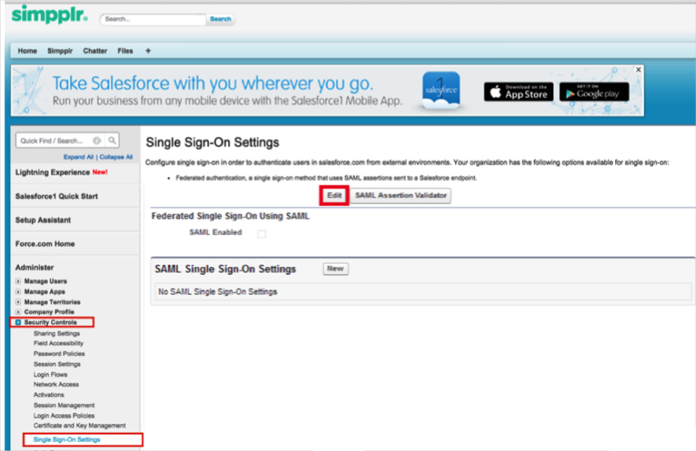
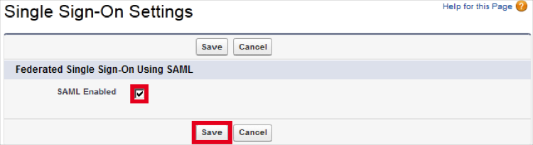
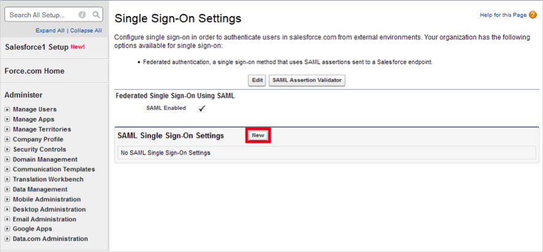
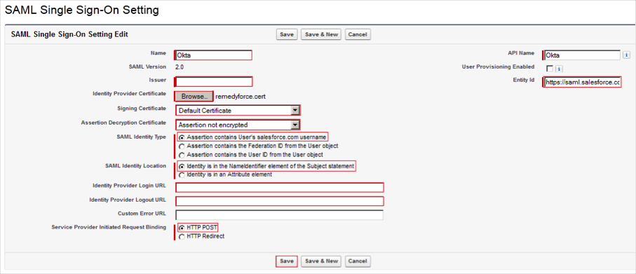
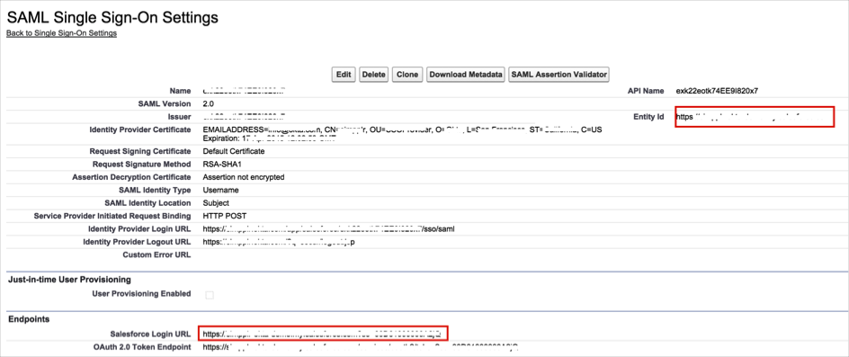
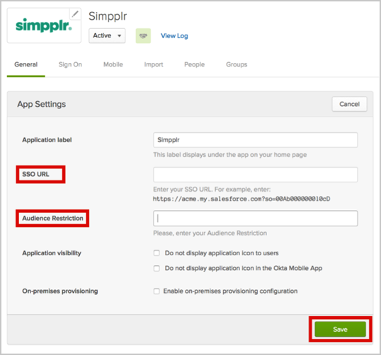
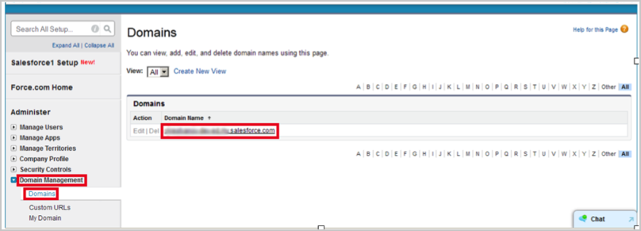
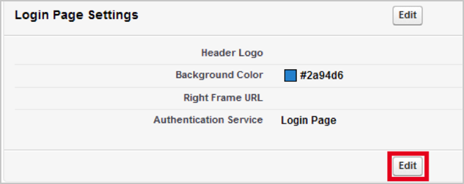
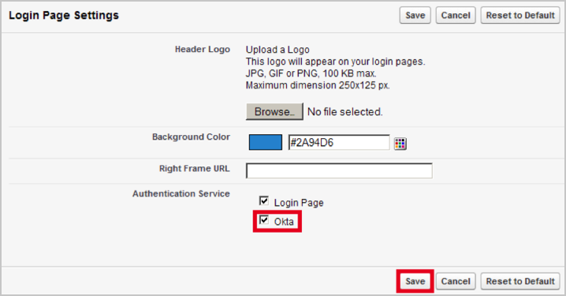

Log in to Simpplr as an administrator and click Go To Salesforce.
Navigate to Setup > Security Controls > Single Sign-On Settings, then click Edit:

Under Single Sign-On Settings, check the SAML Enabled box:

Click New:

Enter the following (see screen shot at end of step for reference):
Issuer: Copy and paste the following:
Sign into the Okta Admin Dashboard to generate this variable.
Identity Provider Certificate:
Sign into the Okta Admin Dashboard to generate this variable.
Signing Certificate: Select Default Certificate.
Assertion Decryption Certificate: Select Assertion not encrypted.
SAML Identity Type: Check Assertion contains User's salesforce.com username.
SAML Identity Location: Check Identity is in the NameIdentifier element of the Subject statement.
Identity Provider Login URL: Copy and paste the following:
Sign into the Okta Admin Dashboard to generate this variable.
Identity Provider Logout URL: Copy and paste the following:
Sign into the Okta Admin Dashboard to generate this variable.
Service Provider Initiated Request Binding: Check HTTP POST.
Click Save.

Make a copy of the Salesforce Login URL and Entity ID:

In Okta, select the General tab for the Simpler app, then copy the values for Salesforce Login URL and Entity ID that you copied into the SSO URL and Audience Restriction fields, then click Save.

Navigate to Setup > Domain Management > Domains, and select your domain:

Scroll to the Login Page Settings section and click Edit:

Check the Okta box, then click Save:

Done!
Notes:
IdP-initiated flows and SP-initiated flows are supported.
Just In Time (JIT) provisioning is not supported.